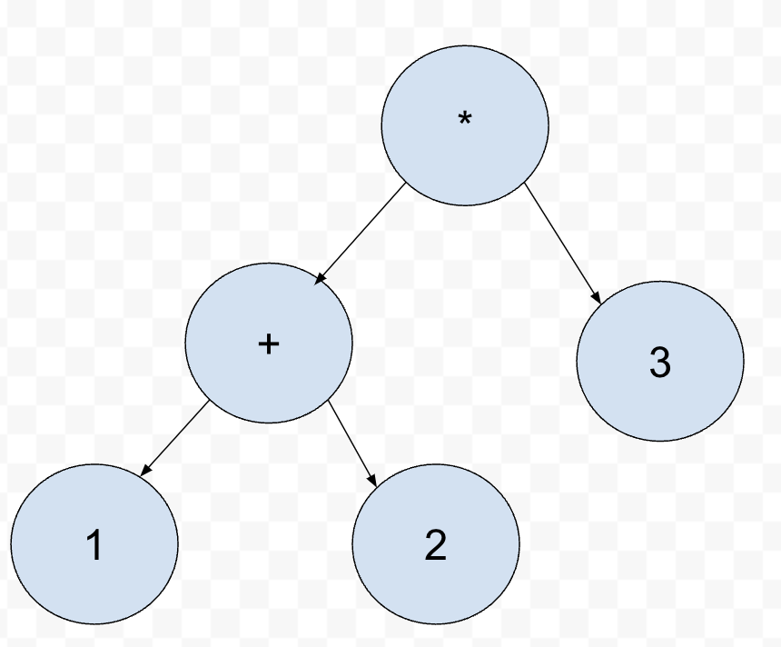

clang 是一个非常工程化实现的编译器前端
和 llvm 一样采用基于库的设计，前端当中词法解析，语法解析，语义分析分离在自己对应的目录，非常便于扩展实现其他功能。
比如在 lsp 协议出来之后，clang 马上就实现了 clangd，ccls 等 language server，而隔壁的 gcc 由于代码量庞大且各个阶段耦合比较严重，并没能够提供好的解决方案。
但是工程化代码带来的另一个问题就是他的逻辑碎片的很严重，因为你作为一个初入 llvm 的人，不知道从哪里入手，这就是本篇文章的目的，代你粗略认识一下 clang。
Driver驱动编译器启动
FrontendAction基础类提供了前端的基类，编译出.o文件使用的是EmitObjectAction，静态分析程序源码调用的是？Action。
- FrontendAction接受一个Consumer，Consumer必须要实现HandleTopLevelTranslation(), FrontendAction在完成parse的过程后，将翻译单元的根节点传给Consumer，
Consumer决定将怎么使用整个翻译单元的结果。， - clang的driver根据用户输入参数决定调用特定的FrontendAction满足用户需求。
- Driver（parser command line option, choose FrontendAction)
- FrontendAction (use parser, call Consumer’s consume function)
- Consumer (implments HandleTopLevelTranslation(), maybe call LLvm’s optimization phase, emitobject …)
- FrontendAction接受一个Consumer，Consumer必须要实现HandleTopLevelTranslation(), FrontendAction在完成parse的过程后，将翻译单元的根节点传给Consumer，
还记得第一次学编译原理的时候，老师就从 parse 开始，但我们知道从流程来说第一个运行的组建是 lex，但为什么从 paser 开始讲起呢？parse 作为整个状态机的推动者，了解完 parse 做的工作，反过头来lex就可以自学了(lex的东西本来就很简单，说到底就是一个map<string,TOKEN_ENUM>)。parse的过程就确定lex必须要实现 lookahead 方法。paser最多向前看多少个字符(n)说明这个parser是ll(n)的。
从parse开始
- Leetcode的65题，我用rust实现了一个parser, 以下是全文注释
1 | // NOTE: 整个程序的思路就是采用parser，向前消耗token， |
parser的核心技术
语法制导
- parser的实现就是通过look_ahead来判断下一个可能的语法，调用对应的处理函数,
比如我的parser通过tokenizer的lookahead拿到了一个关键字’if’,那么这时候就应该调用parseif()。
parseif()根据语法应该实现为:1
2
3
4
5
6
7
8
9
10
11
12
13
14
15
16
17
18
19
20
21
22
23
24Node* parseif(){
/*
* if ( expr ) {
* statements...
* }
*/
token::consume_token(TOKEN_IF); // 消耗掉当前的token if
token::consume_token('(');
auto condition = parse_expr();
token::consume_token(')');
token::consume_token('{');
std::vector<Statement> statements;
while (token::lookahead() != '}') // NOTE：这里还需要判断这个'}'所在的层级
{
statements.push_back(parse_statements());
}
token::consume_token('}');
return make_new(
NodeIf{
.condition = condition,
.statements = statements,
});
}
基于算符©️ 优先级的表达式处理技术
语法制导给了我们parse statements的能力，语法负责逻辑单元，不负责算术单元。算力都是通过表达式封装给用户的!
- c++11当中给我们封装了binary_expr和unary_expr，却没有thribal_expr（其实是有三木运算符这一说的，但不重要）。说明表达式也是二哥的孩子:
任何一个复杂的表达式都可以拆分成多个二元表达式的组合
- 比如下面一条表达式
1
1 + 2 * 3
- 为什么人脑能识别成左边这颗树而不是右边这颗树呢?
- 我们看一下ParseBinary的实现
1
2
3
4
5
6
7
8
9
10
11
12
13
14
15
16
17
18
19
20
21
22
23
24
25
26
27
28
29
30
31
32
33
34
35// 接受一个左子树，并根据当前要求的最小优先级处理二元表达式
Node* ParserBianry(Node* lhs, OperatorPrecedence min_precedence){
while (true) {
auto token = m_tokenizer.LookAHeadForOperator();
if (token == node_type::EOF) return lhs;
int precedence = GetTokenPrecendence(token);
if (precedence < min_precedence) return lhs;
m_tokenizer.next();
auto rhs = ParsePrimary();
if (!rhs) {
// error
}
auto token = m_tokenizer.LookAHeadForOperator();
if (token == node_type::EOF) {
m_tokenizer.Next();
return std::make_unique<BinaryNode>(binaryop, std::move(lhs),
std::move(rhs));
}
auto next_precedence = GetTokenPrecendence(token);
if (precedence < next_precedence) {
rhs = ParseBinary(std::move(rhs), precedence + 1 );
if (!rhs){
// error
}
}
lhs = std::make_unique<BinaryNode>(binaryop, std::move(lhs),
std::move(rhs));
}
} - 进入ParseBinary的时候token 的指针指向的是 ‘+’
- 根据ParserBinary的代码可以看出来，其实现分为三个步骤
- 向前parse一个算符，得到op1
- 向前parse一个Parimary表达式，在这里就是数字2得到一个node v2
- 再向前parse一个算符，得到op2
- 根据op1和op2的优先级大小选择v2应该是和lhs组和成新的左子树，还是应该和下一个表达式结合成为右子树。
- 整个parseBinary结束，优先级问题被二分树解析完成，自此，程序不需要担心表达式优先级。
- 以上的代码片段来自于我实现的一个calculator解析程序此处为代码
- c++11当中给我们封装了binary_expr和unary_expr，却没有thribal_expr（其实是有三木运算符这一说的，但不重要）。说明表达式也是二哥的孩子:
开源库当中关于算符优先级的问题
语义分析
- 大体来说，当中的字符除了字面量就是变量，变量中各个的含义又不一样，比如说下面这个句子
1 | Q: Are you kidding? |
- 有些人就会理解成为你是凯蒂吗，不我是希尔瑞斯！，这个例子告诉你其实对于编译器来讲是错误的，因为产生了二义性，编译器解释不了之后，就会报错。但是下面这个例子编译器还是能够通过语义分析得出两者的不同，最后产生唯一的中间代码
1 |
|
- 那么这段程序当中我就要问了，max 都是变量，但为什么一个是栈地址变量，一个是函数地址呢?语义分析这个大聪明到底是什么发现的呢?
中间代码生成
- 在 clang 最后生成的代码是 llvm ir，作为 llvm 给我们提供了一个比较好的接口，就是 llvm ir 的 builder，llvm 封装了一个 builder 模式的类给我们，我们只需要在代码当中填写好我们的转换规则，就可以 low 到 llvm ir 层面了。整个前端的工作就算完成了
- 之后 llvm 会进行 ir 层面的优化，下降到 machine independent 的表示，然后在进行一次优化，最后进行机器代码的生成 ,关于这一段过程，clang 还有一个接口，只需要注册 runOnFunction/ runOnBasicBlock，之后就可以分析 llmv ir 的中间过程处理情况
clang-tool-extra
- 现代编译器至少要提供一个功能叫语义补全，那么这个功能在 clang 当中提供了什么接口呢，我们来看一下 clangd 中的一个实现
1 | class CompletionConsumer : public CodeCompleteConsumer { |
也就是说，clang 给你提供了 codecomplete 的接口，你只需要实现 ProcessCodeCompleteResults 这个接口，把 clang 中的内容消费出来，然后包装给客户端。 clang-tool-extra 发展了clang的 ast 工具，基于 clang ast/三地址码 可以完成更多非编译器的功能,（如基于lsp协议的语义补全，代码跳转，静态检查)。
- 编译过程设计多个阶段，比如 c 语言的编译涉及到预编译，编译，汇编，链接，gcc 作为一个总调度器，管理着 cpp，cc1，as，ld 四个工具的使用。
- 复杂东西都是从简单的东西开始的，比如指令集这种庞大的东西，x86_64 上大概有 1000 多条指令，你要把这 1000 多条指令学习完成之后，再来完成你的事情，你的事情早就被别人做完了，你的价值也就无从体现。总结一下这 1000 多条指令，其中基础的算术指令 add/sub，逻辑指令 and/or/，控制指令 mov/lea/jmp 也就 80 多条。其余的都是一些 simd 指令，这些 simd 指令有些是为了多媒体解析加速，有些是纯硬件实现的加密算法。编译器的must analysis分析出来一定等价之后才会替换基础指令到高速指令当中。
- 种一颗树最好的时间是十年前，其次是现在。LLVM经过10年的打磨，从0.1到3.4 才追赶上了gcc，3.5 开始到现在已经飙了7年版本了。
- 了解一下编译器对于你之后的编程之路帮助也有很多，比如 parse 这个东西，在很多场景当中都会遇到，比如 sql 注入的处理(当然涉及到正则表达式了, 正则表达式还是parser的选择又是一个问题)。